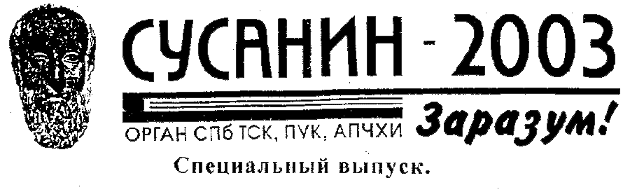

Объединенные редакции газет «Сусанин 2003»,
«Художественная Воля» и правление Н.А.И.И.
Внимательно приглядевшись к собственной деятельности, мы обнаружили
в ней неуместную в новую эпоху серьезности социализированность,
рефлексивность, коммуникативность и открытость.
Это привело к тому,
что мы стали вмешиваться во внехудожественные сферы бытия.
В своём заблуждении мы зашли так далеко, что позволили себе судить
о предметах, в которых не являемся специалистами.
Теперь мы глубоко
сожалеем об этом и приносим свои извинения организациям, институциям,
и лично Д. Циликину, А. Секацкому, К. Долининой, А. Хаменко,
М. Кузьмину, 3. Арсеньевой, Б. Матвеевой, Н. Першиной-Якиманской,
Е. Андреевой и многим, многим другим, кого могли бы задеть
наши публикации или необдуманные действия.
В виду выше сказанного, нами принято решение о закрытии наших
массовых изданий:
«Сусанин 2003», «Художественная Воля»,
радиопрограммы «Новая Академия» (107 FM) и
культурно-просветительской ассоциации АПЧХИ.
Мы будем продолжать нашу деятельность корректно по форме и
высокохудожественно по содержанию.
Мы считаем, что только благородная позиция новой серьезности,
отшельничества, аскезы и вежливости отвечает требованиям искусства
нашей эпохи.
| СПЕЦИАЛЬНЫЙ ВЫПУСК |
|---|